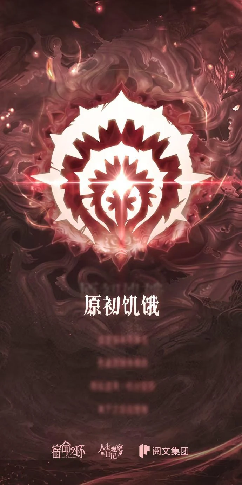

Overview
The Primordial Hunger symbolized the instinct of Convergence.
Klein Moretti, Book 2, chapter 1164
The Primordial Hunger is one of the Outer Deities from the Cosmos that attempted to invade Earth. "He" is the current owner of the Tail-Devourer Pathway, with it being the only Pathway under "Him" as the very idea of division was Devoured by "Him".1.
Honorific Name
Primordial Hunger; The Symbol of Devouring; An Insatiable Convergence; The Cleanser of All Things (原初的饥饿， 吞噬的象征， 永不满足的聚合， 万物的清扫者)
Symbols, Authorities & Abilities
"He" possesses full Authority over the Tail-Devourer and the corresponding Symbols, which include but are not limited to the following:
- Tail-Devourer: Authorities over Devouring, Convergence, and Hunger. And the Symbols of Devouring and Convergence.2Book 2, chapter 1164
The Symbols, Authorities, and Abilities "He" possesses and displays at the Above the Sequence level include:
- Primordium and Chaos: "He" is both the Primordial Hunger and the Chaos Gastric Juices.
- The Primordial Hunger would not miss any opportunities related to Chaos or Primordial qualities.5
- Among the Sefirot, "His" objectives include the City of Calamity, and the Chaos Sea with the the Uniqueness of Hanged Man and others.
- Among the Outer Deities, "He" preferred the Uncertain Mist the most,6 because "He" is the Chaos Gastric Juices, while the Uncertain Mist is a part of the Son of Chaos.7
- '''Convergence (
- "He" could forcibly pull other's true bodies to "His" side.2
- Because of "His" authority over Convergence, even if "He" lacks the explicit ability to Devour and Digest, the Tail-Devourer can still influence Fate to some extent.1Author's WeChat post ph
- Since "He" acts primarily on instinct,8 the Lord of Mysteries' symbolism of Foolishness will have little effect on "Him".
- However, Deceit will have an effect on "Him". "His" instinct for Convergence and desired targets can be exploited.9
Jùhé): "He" symbolized the instinct of Convergence'''.2
- '''Devour (
- "His" domain is not merely eating and Devouring; it also governs Digestion, Utilization, and Erasure. Unlike Concealment—which simply hides and can later be recovered—this power leaves nothing behind.1
- If "He" Devoured an Avatar or Marionette, "He" could absorb and erase the corresponding abilities, reducing or even temporarily nullifying their symbolic influence.2
- "He" can Devour the Ravings within "His" own mind when affected by the Inextinguishable Ravings.3Book 2, chapter 1167
- If the Primordial Hunger Devoured certain entities, the following will happen:
- Chaos Primogenitor: This would cause an aggressive Convergence to occur, causing the return of the Original Creator.11
- Paragon: Since the Paragon is the Embodiment of Essence, all atoms in the cosmos would become Hungry' and would converge, triggering continuous nuclear fusion everywhere, leading to the universe's living environment becoming extremely hostile to life.12
- Pathways or Sefirot related to mind/spirit, like Visionary or Inextinguishable Ravings: "He" would develop the ability to Devour others' minds, but would not become smarter.13
Tūnshì): "He" can Devour''' everything, including things such as black holes.10
Countering Symbols, Authorities & Abilities
Certain Symbols, Authorities, and Abilities of other Great Old Ones can counter some of "His" powers, which include but are not limited to the following:
- Calamity of Destruction:
- Disaster of Origin counters Devouring.
- When biting through the Chaos Vortex produced by the Calamity of Destruction, the Primordial Hunger cannot Devour the corresponding abilities and authorities due to the symbolism of Disaster of Origin.14
- God Almighty:
- Envisioning counters Devouring.
- When Devouring the God Almighty's Envisioned Illusions, "He" cannot Devour the corresponding abilities and authorities.3
Appearance
True Form: A dark vortex revealing bared white teeth and chaotic liquid encompassing all colors. "His" exterior no longer featured elongated black shadows with different heads, as they seemed to have been consumed by "Himself" long ago.15
Personality
Out of all the Outer Deities known, "He" is the most primitive and vulnerable to "His" desires of Convergence, having Devoured "His" rationality and only leaving the most basic sense of self-preservation.
Background
According to the Seven Lights, ever since the Oldest One awakened and split apart, the most powerful Outer Deities in the entire universe, including the Primordial Hunger, gathered around this tiny solar system.
Some of "Them" wish to retrieve "Their" Sefirot and Beyonder Characteristics that had been ripped from "Them" and were attracted here. Some have the hope of getting neighboring Sefirot and high-level Beyonder Characteristics which "They" can accommodate.16
The Primordial Hunger would not miss any opportunities related to chaos or primordial qualities. "His" objective appeared to be consuming the City of Calamity, ingesting but not digesting the Chaos Sea, and absorbing the Uniquenesses of the Hanged Man and others. However, Klein suspected that the Primordial Hunger might lose control over "His" convergence instinct and directly swallow the Chaos Sea.2Book 2, chapter 1164
The Primordial Hunger can Devour any Outer Deities, but "He" preferred to Devour the Uncertain Mist the most,17 because "He" is the Chaos Gastric Juices, while the Uncertain Mist is a part of the Son of Chaos.18
History
"His" subordinate Angel, Ludwig Phil, was captured and sealed by the Church of the God of Knowledge and Wisdom. The organization that follows the Primordial Hunger, the School of Deliciousness, tried to reclaim Ludwig during Project Vortex.19
The corruption on the Box of the Great Old Ones was revealed to originate from "Him". It was fed to Ludwig Phil by Lumian Lee, which allowed "Him" to advance and recover to Sequence 1 Chaos Gastric Juices.
During The Apocalypse, "He" was held off by Adam for the duration of the fight and was forced to withdraw after being dealt a critical blow by Lumian Lee.
Translations
| Language | Name |
|---|---|
| Chinese | 原初饥饿 |
| Thai | ความอดอยากปฐมกาล |
References
- Author's WeChat post ph.
- Book 2, chapter 1164.
- Book 2, chapter 1167.
- Book 2, chapter 1159.
- Book 2, chapter 1164.
- Author's WeChat post ph, part 3.
- Author's WeChat post coi, part 39.
- Book 2, chapter 1174.
- Book 2, chapter 1167.
- Book 2, chapter 1159.
- Author's WeChat post ph, part 30.
- Author's WeChat post coi, part 16.
- Author's WeChat post fate_formulas, part 36.
- Book 2, chapter 1166.
- Book 2, chapter 1165.
- Book 1, chapter 1271.
- Author's WeChat post ph, part 3.
- Author's WeChat post coi, part 39.
- Book 2, chapter 865.
Source
Article adapted from the Primordial Hunger article on the Lord of the Mysteries Fandom wiki (CC BY-SA). Chapter numbers follow that article's citation format.
Image gallery
